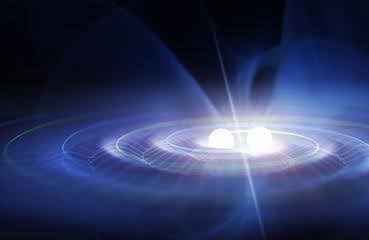
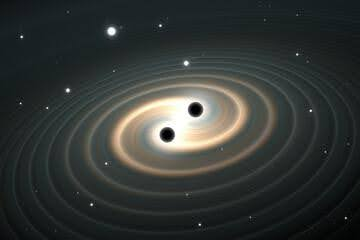

PARTICLE ASTROPHYSICS
- July 30, 2024
- Admin
- 3 Comments
Introduction.
Our universe is a symphony of particles, and understanding their dance is the captivating pursuit of particle physics. This fundamental science lays the groundwork for particle astrophysics, an engrossing field that delves into the most enigmatic and energetic phenomena in the cosmos. By exploring the interactions of these high-energy particles with celestial objects, particle astrophysics unlocks the mysteries of our universe's origin, evolution, and even the elusive dark matter. Let's embark on a journey to the vast cosmic canvas and dive deep into the fascinating world of particle astrophysics.
The Inception :
The year 1910 marked the beginning of a cosmic quest. German physicist Theodor Wulf, intrigued by radiation levels at the Eiffel Tower's summit, detected a surprising increase
compared to the base. This hinted at an extraterrestrial source.
Fuelled by this discovery, Austrian physicist Victor Hess constructed specialized instruments for high-altitude
measurements. Through balloon flights reaching over 5 kilometres, he observed a rise in radiation that defied expectations of a terrestrial source diminishing with height.
This led him to a groundbreaking conclusion: a powerful radiation was bombarding Earth's atmosphere from the cosmos. Notably, even a solar eclipse failed to affect these
levels, solidifying their extra-terrestrial origin.
Hess's pioneering work earned him a share of the 1936 Nobel Prize in Physics. Robert Millikan later corroborated these
findings in 1925 and christened this mysterious space radiation "cosmic rays."

Cosmic Rays :
Cosmic rays are a perplexing barrage of high-energy particles, primarily protons and atomic nuclei (stripped of electrons), hurtling through space at nearly light-speed.
Their origin story spans our solar system, galaxy, and even beyond, with sources including supernovas and distant active galactic nuclei.
Upon Earth's atmospheric entry, these primary cosmic rays (mostly protons and helium nuclei) unleash a cascade of secondary particles. Collisions with atmospheric atoms
(mainly oxygen and nitrogen) produce a shower of lighter particles, including pions, muons, electrons, neutrinos, and photons. These secondary rays, unlike their parents,
can be directly detected.
The composition of primary cosmic rays is roughly 90% protons, 9% alpha particles, and 1% heavier nuclei, with a tiny fraction of antimatter like
positrons and antiprotons. This intriguing antimatter presence is an active area of research, potentially hinting at new annihilation processes or exotic dark matter interactions.
Cosmic ray energy varies greatly, with some particles reaching phenomenal energies exceeding those achievable in human-made accelerators. This unique characteristic allows
them to probe the universe's most violent phenomena, offering insights into stellar explosions and particle interactions beyond our current capabilities.
However, these high-energy particles pose a threat to astronauts venturing outside Earth's magnetosphere. Their interactions with spacecraft materials can damage electronics and potentially harm human tissue.
Studying cosmic rays, through sophisticated particle detectors on Earth and space-based missions, unveils the secrets of the cosmos. From the abundance of light elements
like lithium, beryllium, and boron forged in cosmic ray spallation to the exotic properties of antimatter, these energetic messengers continue to challenge our understanding of the universe.
Neutrino Astronomy :
The neutrino, a fundamental particle denoted by the Greek letter ν (nu), has captivated scientists for its elusive nature. Once thought to be massless, it's now known to possess
an incredibly tiny mass, defying initial assumptions. Neutrinos come in three flavours: electron, muon, and tau, each associated with its corresponding charged lepton. Unlike most particles,
they interact very weakly with matter, making them incredibly difficult to detect. This characteristic has earned them the nickname "ghost particles".
Despite their feeble interaction, neutrinos are copiously produced in various phenomena, including nuclear reactions within the Sun and cosmic ray interactions. They're constantly bombarding
us from space, offering a window into the universe's most violent processes. The discovery of neutrino oscillation in 1998 revolutionized our understanding of these particles. This phenomenon
revealed that neutrinos can change flavour as they travel, a behaviour only possible if they have mass. This finding was crucial and earned the 2015 Nobel Prize in Physics.
While the absolute value of neutrino mass remains elusive, we know it's incredibly small – much smaller than any other known particle. Extensive research efforts, like the KATRIN experiment,
are underway to precisely measure this value.
Neutrinos come in two varieties: neutrinos and antineutrinos. The question of whether they are identical particles, known as Majorana
particles, is a topic of ongoing investigation. If proven true, it would have significant implications for our understanding of particle physics.

Gamma-Ray Astronomy :
Collisions between cosmic rays and interstellar hydrogen fuel galactic gamma-ray production. Gamma-ray telescopes, like the Fermi Gamma-ray Space Telescope and ground-based observatories,
allow particle astrophysicists to observe these high-energy phenomena and study their astrophysical implications. Fuelled by extreme temperatures, densities, and magnetic fields, these
gamma rays originate from various processes like electron-positron annihilation, the inverse Compton effect, and in some cases, gamma decay. Their presence signifies violent astrophysical
phenomena, including the decay of neutral pions. From black holes to stellar coronas, a menagerie of celestial objects emits gamma rays. Neutron stars, white dwarfs, supernova remnants,
and galaxy clusters like the Crab Nebula join the list, along with a diffuse background glow across the Milky Way. While high-energy cosmic rays trigger atmospheric showers, lower-energy
gamma rays require space-based detectors.
Finally, gamma-ray bursts, like the record-breaking GRB 190114C, pose a challenge, lasting mere microseconds to hundreds of seconds and hinting at extreme, poorly understood astrophysical processes.
Dark Matter :
Dark matter, the enigmatic substance composing a staggering 85% of the universe's mass, remains shrouded in mystery due to its elusive nature – it interacts neither with light nor the electromagnetic field.
Galactic Rotation Curves :
| Data | Measured rotational velocities of stars at various distances from the centre of spiral galaxies. |
| Anomaly | Contrary to expectations from Keplerian dynamics (where orbital velocity decreases with distance), observed velocities remain roughly constant for most of the galaxy's radius. |
| Implication | The presence of significant unseen mass, particularly concentrated in the outer regions, exerting a gravitational influence on visible matter. |
Gravitational Lensing :
| Data | Observations of the distortion of light from distant galaxies by the gravitational field of massive foreground objects (e.g., galaxy clusters). |
| Analysis | Precise measurements of the amount of deflection experienced by light allows astronomers to calculate the mass of the lensing object. |
| Result | The inferred mass of galaxy clusters from gravitational lensing significantly exceeds the mass estimated from the visible stars and gas, suggesting a substantial dark matter component. |
Galaxy Cluster Masses :
| Data 1 | Measurement of the velocities of galaxies within a cluster using the Doppler shift of their spectral lines. |
| Data 2 | X-ray observations of the hot gas permeating galaxy clusters. The gas temperature and density can be derived from the X-ray spectrum, allowing estimation of the gas pressure. |
| Analysis | Applying the virial theorem, which relates the total mass of a bound system to its kinetic and potential energy, to the measured velocities of galaxies (Data 1) provides an estimate of the cluster's mass. Additionally, the pressure of the hot gas (derived from Data 2) can be balanced against gravity to determine the total mass required for hydrostatic equilibrium. |
| Convergence | When the cluster mass is estimated using both methods (velocities and hot gas), the results are in remarkable agreement. This consistency strengthens the case for dark matter, as it suggests the existence of a significant amount of non-luminous mass contributing to the cluster's total mass. |
Cosmic Microwave Background (CMB) :
The cosmic microwave background radiation is the relic radiation from the early universe, which provides a snapshot of the universe's state approximately 380,000 years after the Big Bang. It exhibits a nearly
uniform temperature across the sky with small fluctuations that reveal crucial information about the universe's composition, structure, and evolution. Particle astrophysicists analyse these fluctuations to
test theories of cosmology and gain insights into the universe's origins.
| Data | Precise measurements of the CMB's temperature fluctuations by space missions like WMAP and Planck. |
| Significance | The CMB, a faint afterglow of the Big Bang, offers a snapshot of the early universe. The tiny temperature variations encode information about the density perturbations of matter and radiation at that epoch. |
| Analysis | By comparing the observed CMB anisotropies with theoretical predictions from cosmological models, scientists can constrain the properties of the universe, including the abundance of dark matter. The Lambda-CDM model, which incorporates dark matter as a cold dark matter (CDM) component, is strongly supported by the CMB data. |
Lyman-alpha Forest :
| Data | Analysis of absorption lines in the spectra of distant quasars arising from neutral hydrogen gas. |
| Significance | The observed distribution and strength of these absorption lines can be used to probe the large-scale distribution of matter along the line of sight to the quasar. |
| Consistency | Analysis of the Lyman-alpha Forest data yields results that concur with the existence of dark matter inferred from other methods. |
Galaxy Redshift Surveys :
| Data | Large-scale surveys like the Sloan Digital Sky Survey (SDSS) measure the positions and redshifts (a measure of distance) of millions of galaxies. |
| Analysis | The distribution of galaxies and their peculiar velocities (relative to the Hubble flow) can be used to map the large-scale structure of the universe and constrain cosmological models. |
| Specific Techniques | |
| Baryon Acoustic Oscillations (BAO) | A signature of sound waves that propagated through the early universe's baryonic matter. The observed BAO scale in galaxy redshift surveys aligns with predictions that include dark matter. |
| Redshift-space distortions | Peculiar velocities of galaxies distort the spatial distribution observed in redshift surveys. The measured distortions are consistent with the Lambda-CDM model, which incorporates dark matter. |
Gravitational Waves :
Gravitational waves, ripples in the fabric of spacetime itself, carry profound implications for our understanding of the cosmos. Predicted by Albert Einstein in 1916 as a consequence
of his theory of general relativity, these waves were first thought to be too weak to ever be directly observed.
Gravitational waves generated during “death dance” of neutron stars
However, decades of tireless research culminated in a breakthrough in 2015 when the LIGO (Laser Interferometer Gravitational-Wave Observatory) detectors successfully captured the signal from a distant black hole merger.
Unlike electromagnetic waves, which interact with matter, gravitational waves travel unimpeded, offering a unique window into events previously invisible to telescopes. These events include the cataclysmic mergers of
black holes and neutron stars, the violent deaths of massive stars in supernovae, and potentially even the echoes of the Big Bang itself.
The Theory Behind the Ripples :

Artistic impression of the gravitational ripples that transfer the gravitational energy
While Classical mechanics assumes instantaneous interaction between objects and thus fails to explain the phenomena, general relativity postulates that gravity propagates as waves at the speed of light. These waves
stretch and squeeze spacetime as they travel, carrying away energy as gravitational radiation.
The Hulse-Taylor Pulsar and the First Hint :
The first indirect evidence for gravitational waves came in 1974 from studying the Hulse-Taylor binary pulsar system. This system consists of a neutron star and a pulsar, locked in a close orbit. General relativity predicts that the energy lost through gravitational radiation will cause the pulsar's orbit to slowly shrink. Remarkably, observations of the Hulse-Taylor system precisely matched this prediction, providing strong circumstantial evidence for the existence of gravitational waves.
The Dawn of Gravitational-Wave Astronomy :
The 2015 LIGO detection marked a turning point. By analysing the faint distortions(~10-18 m) in laser interferometers caused by passing gravitational waves, scientists were able to pinpoint the merger of two black
holes 1.3 billion light-years away. This groundbreaking observation opened a new era of gravitational-wave astronomy, allowing us to study the universe in a fundamentally new way.

A Universe Revealed :
Gravitational-wave astronomy promises to revolutionize our understanding of the cosmos. We can now probe the violent deaths of massive stars, study the properties of black holes in unprecedented detail, and potentially even glimpse the birth of our universe. As detector sensitivity improves and new observatories come online, the symphony of gravitational waves will continue to unveil the universe's hidden secrets.
Conclusion :
Particle astrophysics is a vibrant and dynamic field that continues to push the boundaries of human knowledge about the universe. By combining insights from particle physics, astrophysics, and cosmology, particle astrophysicists strive to uncover the fundamental laws governing the cosmos and answer some of the most profound questions about its origins, evolution, and ultimate fate. With ongoing technological advancements and international collaborations, the future of particle astrophysics holds great promise for unlocking the mysteries of the universe and expanding our understanding of the cosmos.